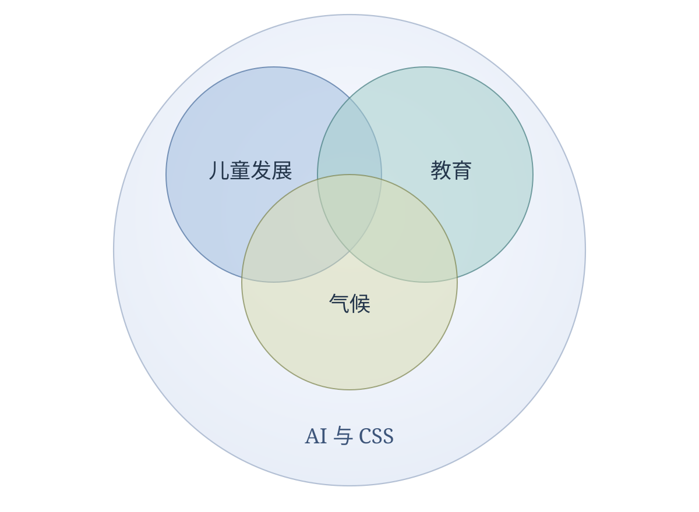

研究
我的研究涵盖儿童发展、教育、气候、人工智能与计算社会科学。
研究领域

儿童发展与教育不平等
我关注儿童早期发展中的社会经济差异与性别差异，考察家庭关系和早期教育的组织方式如何塑造这些不平等。
- Socioeconomic status and inequalities in early development of non-cognitive skills: Evidence from China. 已发表，2026
- Socioeconomic Gaps in Early Childhood Development in China: A Generalized Decomposition. 修改后重审
- The Granddaughter Penalty: Grandparental Lineage and Gendered Gaps in Early Social-Emotional Development in Urban China. 在审
- Gender Differentials in Early Childhood Development. 工作论文
- Kindergarten Segregation and Early Childhood Development in China. 进行中
气候与儿童发展
这一研究方向将气候和环境暴露与儿童早期发展联系起来，关注儿童高温暴露的不平等，以及家庭如何适应儿童早期的环境条件。
- Early-Life Environmental Conditions and Child Development: Socioeconomic Disparities in Exposures and Adaptations among Families with Young Children. 工作论文
- Early Life Heat Exposure and Child Development: Evidence from China. 进行中
- Inequality in Early Children’s Heat Exposure. 进行中
城市生活与福祉
我考察邻里环境如何塑造社会生活与福祉，研究议题包括城市活力、集体效能、文化基础设施和公共开放空间。
- Decomposing Urban Vitality: Neighborhood Attractiveness, Neighborhood Engagement, and Collective Efficacy in Shanghai. 修改后重审
- Neighborhood Cultural Infrastructure and Late-Life Mental Health: Evidence from Hong Kong. 在审
- Beyond Density and Diversity: Locality and the Dual Dimensions of Urban Vitality in Shanghai. 工作论文
- Public Open Space and Early Childhood Development in Hong Kong. 工作论文
家庭、人口与健康
这一研究方向考察生命历程中的家庭关系与健康，涵盖代际支持、吸烟与饮酒行为，以及退休后的身体活动。
- The Quantity–Quality Trade-off in the Long Run: Number of Children and Intergenerational Support in China. 工作论文
- Socioeconomic Differentials in Smoking and Drinking in China, 1991–2015. 进行中
- Retirement and Physical Activity in Urban China. 进行中
人工智能与计算社会科学
我运用计算方法研究社会结构，包括职业技能的网络组织方式，同时开发并讲授人工智能辅助研究的实践方法。
- The Network Structure of Occupational Skills in Hong Kong. 进行中
版权
© 沈明宏 2026